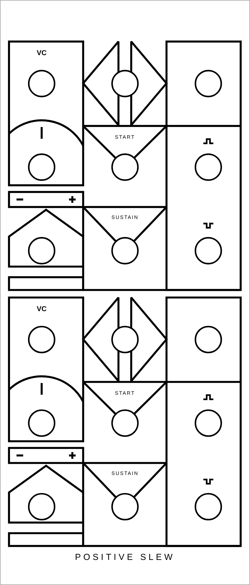

Positive Slew
CGS83
Two sections that slew rising voltages, or run as upward-ramp LFOs when their pulse is fed back.
- Design
- Serge Tcherepnin; CGS83 by Ken Stone
- Function
- Modulation / slew
- Panel widths
- 3"
- Build options
- 3
Panels in this repo


How it works
Each of the two identical sections controls the rate at which its output can rise, leaving falls untouched.
Feed the lower pulse output into START and the section runs as an upward-sloping ramp LFO or utility oscillator, good for fixed-pitch sequencing, effects and noises. It does not track 1V/oct.
Controls and jacks
| Name | Type | What it does |
|---|---|---|
| IN, OUT | jacks | Signal and slewed output. |
| START, SUSTAIN | inputs | Trigger and hold. |
| VC | input + knob | Slew rate. |
| Pulse outputs | outputs | Gate and end pulses. |
Build options
Prism Circuits Positive Slew
- Offered as
- PCB for a 4U paperface panel (also an LW-format version)
- Format
- 4U Serge, paperface
- Schematic
- not publishedNot published by Prism
- BOM
- availablePrism BOM, kept as a Mouser cart (linked below)
- Mouser cart
- Prism Mouser cart (the Prism BOM)
The maker's own shared Mouser project: open it and choose "Buy selected items". Check what it leaves out (often pots, knobs, jacks and headers).
LW-format version: https://prismcircuits.net/products/positive-slew-lw
Prism's product page also links its own panel art; that artwork is Prism's and is not copied here.
Ken Stone CGS83 Positive Slew
- Offered as
- PCB from Elby Designs; schematic, parts list and construction notes on Ken Stone's page
- PCB
- Elby Designs: CGS83 PCB
- Schematic
- availableCGS83 Positive Slew schematic
- BOM
- availableCGS83 Positive Slew parts list (in the BOM spreadsheet below)
Low-Gain LGE083 Dual Positive Slopes
- Offered as
- Assembled module or DIY PCBs
- Format
- 4U Serge, Loudest Warning-style mounting
- Schematic
- availableLow-Gain schematics (Google Drive, linked below)
- BOM
- availableLow-Gain BOMs (Google Drive, linked below)
- Documents
- LGE083 Main PCB (v2) BOM
LGE083 Main PCB (v2) schematic
LGE083C I/O Board BOM
LGE083C I/O Board (wiring diagram) schematic
The LGE083 is two positive slopes on one 6" x 2" board, and its white-panel I/O board (LGE083C) adds sub-miniature toggle switches and 3mm LEDs. The single-slope paperface Positive Slew panel in this repo has no switches or LEDs, so it will not take the I/O board without changes.
Low-Gain boards set their own jack positions; check them against the panel you use.
Ken Stone's Serge-derived designs may be built for personal use only; Serge Tcherepnin keeps all rights to his circuits. Schematics, parts lists and PCBs belong to their designers and sellers, so these pages link to them rather than copying them.
Bill of materials
Spreadsheet: positive-slew.csv (CSV; opens in Excel, Numbers or Google Sheets). It lists the parts for every build option: Ken Stone's parts lists, and the parts data from Low-Gain's, Prism's and Elby's own BOMs where they publish one.
The makers' parts lists were copied into the spreadsheet automatically from their PDFs and Mouser carts (values, quantities and reference designators only; each row links its source). Check them against the maker's current BOM before ordering, and read the maker's notes there: they are not repeated here.
Order from Mouser: positive-slew__cgs83_positive_slew.csv (26 lines, about $19.77 at single-unit prices), positive-slew__prism_cart.csv (27 lines, about $51.63 at single-unit prices). Files ending _cart are made from a maker's own Mouser cart. Upload one at Mouser's BOM tool (it reads the Mouser and manufacturer part number columns). Parts Mouser doesn't stock are listed in positive-slew__cgs83_positive_slew_not_at_mouser.csv, positive-slew__prism_cart_not_at_mouser.csv.
Makers' Mouser carts: Prism Circuits Positive Slew: Prism Mouser cart (the Prism BOM). Each opens the maker's shared Mouser project, where you can add the whole list to your cart. They are kept by the makers, so they follow the current board revision.
Pots and knobs from Tayda: positive-slew__cgs83_positive_slew.csv (2 lines, about $3.24). The pots (16 mm, solder lugs, 1/4" round shaft) and Davies 1900H-style knobs cost less at Tayda Electronics than at Mouser, so they are listed here with a link to each Tayda product instead of in the Mouser file.
All builds (3 lines)
| Section | Type | Value / part | Qty | Notes |
|---|---|---|---|---|
| Front panel (Paperface (1973)) | Panel hardware | Banana jack, colour not recorded | 14 | 4 mm |
| Front panel (Paperface (1973)) | Panel hardware | Potentiometer + knob | 4 | value from the board BOM |
| Front panel (Paperface (1973)) | Panel hardware | Knob | 4 | one per pot |
Prism Circuits Positive Slew (27 lines)
| Section | Type | Value / part | Qty | Notes |
|---|---|---|---|---|
| Prism Positive Slew | Transistor | BC547B | 8 | BJT NPN TO-92 45V 100mA; from Prism's Mouser cart: https://www.mouser.com/ProjectManager/ProjectDetail.aspx?AccessID=1957cc6f89 |
| Prism Positive Slew | Transistor | BC557B | 4 | BJT PNP TO-92 45V 100mA; from Prism's Mouser cart: https://www.mouser.com/ProjectManager/ProjectDetail.aspx?AccessID=1957cc6f89 |
| Prism Positive Slew | Hardware | 640456-4 | 1 | Headers & Wire Housings FRICTION LCK HDR 4P Stra; from Prism's Mouser cart: https://www.mouser.com/ProjectManager/ProjectDetail.aspx?AccessID=1957cc6f89 |
| Prism Positive Slew | Capacitor | 0.1uF | 4 | MLCC RAD 50V 0.1uF X7R 10% LS:5mm; from Prism's Mouser cart: https://www.mouser.com/ProjectManager/ProjectDetail.aspx?AccessID=1957cc6f89 |
| Prism Positive Slew | Capacitor | 0.1uF | 2 | Film .1uF 5% 63volts; from Prism's Mouser cart: https://www.mouser.com/ProjectManager/ProjectDetail.aspx?AccessID=1957cc6f89 |
| Prism Positive Slew | Jack | Banana Blue | 6 | Jack BANANA JACK BLUE; from Prism's Mouser cart: https://www.mouser.com/ProjectManager/ProjectDetail.aspx?AccessID=1957cc6f89 |
| Prism Positive Slew | Jack | Banana Red | 8 | Jack BANANA JACK RED; from Prism's Mouser cart: https://www.mouser.com/ProjectManager/ProjectDetail.aspx?AccessID=1957cc6f89 |
| Prism Positive Slew | IC | MC78M06CTG | 1 | Linear Voltage Regulator 6V 500mA Positive; from Prism's Mouser cart: https://www.mouser.com/ProjectManager/ProjectDetail.aspx?AccessID=1957cc6f89 |
| Prism Positive Slew | Resistor | 4k7 | 12 | R 4.7K ohm 1/4W 5%; from Prism's Mouser cart: https://www.mouser.com/ProjectManager/ProjectDetail.aspx?AccessID=1957cc6f89 |
| Prism Positive Slew | Resistor | 100k | 10 | R 100K ohm 1/4W 5%; from Prism's Mouser cart: https://www.mouser.com/ProjectManager/ProjectDetail.aspx?AccessID=1957cc6f89 |
| Prism Positive Slew | Resistor | 470k | 6 | R 470K OHM 5%TR 1/4W; from Prism's Mouser cart: https://www.mouser.com/ProjectManager/ProjectDetail.aspx?AccessID=1957cc6f89 |
| Prism Positive Slew | Resistor | 220R | 6 | R 1/4W 220 Ohm 5%; from Prism's Mouser cart: https://www.mouser.com/ProjectManager/ProjectDetail.aspx?AccessID=1957cc6f89 |
| Prism Positive Slew | Potentiometer | 50k | 4 | Potentiometers 9mm 50K ohm; from Prism's Mouser cart: https://www.mouser.com/ProjectManager/ProjectDetail.aspx?AccessID=1957cc6f89 |
| Prism Positive Slew | Resistor | 220k | 4 | R 220 kOhms 1/4W 5%; from Prism's Mouser cart: https://www.mouser.com/ProjectManager/ProjectDetail.aspx?AccessID=1957cc6f89 |
| Prism Positive Slew | Resistor | 1M | 4 | R 1M ohm 1/4W 5%; from Prism's Mouser cart: https://www.mouser.com/ProjectManager/ProjectDetail.aspx?AccessID=1957cc6f89 |
| Prism Positive Slew | Resistor | 18k | 4 | R 18 kOhms 1/4W 5%; from Prism's Mouser cart: https://www.mouser.com/ProjectManager/ProjectDetail.aspx?AccessID=1957cc6f89 |
| Prism Positive Slew | Switch | 1N4148 | 4 | Small Signal Switching Diode; from Prism's Mouser cart: https://www.mouser.com/ProjectManager/ProjectDetail.aspx?AccessID=1957cc6f89 |
| Prism Positive Slew | IC | LM3900N | 2 | OpAmp Quad; from Prism's Mouser cart: https://www.mouser.com/ProjectManager/ProjectDetail.aspx?AccessID=1957cc6f89 |
| Prism Positive Slew | Resistor | 820k | 2 | R 820K ohm 5% 1/4W Carbon Film; from Prism's Mouser cart: https://www.mouser.com/ProjectManager/ProjectDetail.aspx?AccessID=1957cc6f89 |
| Prism Positive Slew | Resistor | 47k | 2 | R 47Kohm 5% 1/4W Carbon Film; from Prism's Mouser cart: https://www.mouser.com/ProjectManager/ProjectDetail.aspx?AccessID=1957cc6f89 |
| Prism Positive Slew | Resistor | 3k3 | 2 | R 3.3K ohm 1/4W 5%; from Prism's Mouser cart: https://www.mouser.com/ProjectManager/ProjectDetail.aspx?AccessID=1957cc6f89 |
| Prism Positive Slew | Resistor | 33R | 2 | R 33 OHM 5%TR 1/4W; from Prism's Mouser cart: https://www.mouser.com/ProjectManager/ProjectDetail.aspx?AccessID=1957cc6f89 |
| Prism Positive Slew | Trimmer | 25k | 2 | Trimmer 1/4"SQ 25KOHMS; from Prism's Mouser cart: https://www.mouser.com/ProjectManager/ProjectDetail.aspx?AccessID=1957cc6f89 |
| Prism Positive Slew | Capacitor | 220pF | 2 | MLCC 220pF 100volts 5% C0G 5mm LS; from Prism's Mouser cart: https://www.mouser.com/ProjectManager/ProjectDetail.aspx?AccessID=1957cc6f89 |
| Prism Positive Slew | Capacitor | 10uF | 2 | Elec 10UF 25V KS RADIAL; from Prism's Mouser cart: https://www.mouser.com/ProjectManager/ProjectDetail.aspx?AccessID=1957cc6f89 |
| Prism Positive Slew | Resistor | 10k | 2 | R 10kOhms 1/4W 5%; from Prism's Mouser cart: https://www.mouser.com/ProjectManager/ProjectDetail.aspx?AccessID=1957cc6f89 |
| Prism Positive Slew | Resistor | 100R | 2 | R 100ohm 1/4W 5%; from Prism's Mouser cart: https://www.mouser.com/ProjectManager/ProjectDetail.aspx?AccessID=1957cc6f89 |
Ken Stone CGS83 Positive Slew (32 lines)
| Section | Type | Value / part | Qty | Notes |
|---|---|---|---|---|
| CGS83 board | Capacitor | 220pF | 2 | from https://open4umodular.github.io/synthpanel/modules/cgs83_positive_slew.html |
| CGS83 board | Capacitor | 100n (0.1) decoupling caps | 2 | from https://open4umodular.github.io/synthpanel/modules/cgs83_positive_slew.html |
| CGS83 board | Capacitor | 100n mylar, MKT or sim | 2 | from https://open4umodular.github.io/synthpanel/modules/cgs83_positive_slew.html |
| CGS83 board | Capacitor | 10uF 25V | 3 | from https://open4umodular.github.io/synthpanel/modules/cgs83_positive_slew.html |
| CGS83 board | Resistor | 33R | 2 | from https://open4umodular.github.io/synthpanel/modules/cgs83_positive_slew.html |
| CGS83 board | Resistor | 100R | 2 | from https://open4umodular.github.io/synthpanel/modules/cgs83_positive_slew.html |
| CGS83 board | Resistor | 220R | 6 | from https://open4umodular.github.io/synthpanel/modules/cgs83_positive_slew.html |
| CGS83 board | Resistor | 3k3 | 2 | from https://open4umodular.github.io/synthpanel/modules/cgs83_positive_slew.html |
| CGS83 board | Resistor | 4k7 | 12 | from https://open4umodular.github.io/synthpanel/modules/cgs83_positive_slew.html |
| CGS83 board | Resistor | 5k6 | 1 | from https://open4umodular.github.io/synthpanel/modules/cgs83_positive_slew.html |
| CGS83 board | Resistor | 6k8 | 1 | from https://open4umodular.github.io/synthpanel/modules/cgs83_positive_slew.html |
| CGS83 board | Resistor | 10k | 2 | from https://open4umodular.github.io/synthpanel/modules/cgs83_positive_slew.html |
| CGS83 board | Resistor | 18k | 4 | from https://open4umodular.github.io/synthpanel/modules/cgs83_positive_slew.html |
| CGS83 board | Resistor | 22k (use 100k) | 2 | from https://open4umodular.github.io/synthpanel/modules/cgs83_positive_slew.html |
| CGS83 board | Resistor | 47k | 2 | from https://open4umodular.github.io/synthpanel/modules/cgs83_positive_slew.html |
| CGS83 board | Resistor | 100k | 8 | from https://open4umodular.github.io/synthpanel/modules/cgs83_positive_slew.html |
| CGS83 board | Resistor | 220k | 4 | from https://open4umodular.github.io/synthpanel/modules/cgs83_positive_slew.html |
| CGS83 board | Resistor | 470k | 6 | from https://open4umodular.github.io/synthpanel/modules/cgs83_positive_slew.html |
| CGS83 board | Resistor | 820k | 2 | from https://open4umodular.github.io/synthpanel/modules/cgs83_positive_slew.html |
| CGS83 board | Resistor | 1M | 4 | from https://open4umodular.github.io/synthpanel/modules/cgs83_positive_slew.html |
| CGS83 board | Potentiometer / trimmer | 20k (or sim) single turn trimmer | 2 | from https://open4umodular.github.io/synthpanel/modules/cgs83_positive_slew.html |
| CGS83 board | Potentiometer / trimmer | 100k lin pot | 4 | from https://open4umodular.github.io/synthpanel/modules/cgs83_positive_slew.html |
| CGS83 board | Semiconductor | 1N4148 | 4 | from https://open4umodular.github.io/synthpanel/modules/cgs83_positive_slew.html |
| CGS83 board | Semiconductor | 2N3565 (BC547) | 6 | from https://open4umodular.github.io/synthpanel/modules/cgs83_positive_slew.html |
| CGS83 board | Semiconductor | 2N3566 (BC547) | 2 | from https://open4umodular.github.io/synthpanel/modules/cgs83_positive_slew.html |
| CGS83 board | Semiconductor | 2N4248 (BC557) | 4 | from https://open4umodular.github.io/synthpanel/modules/cgs83_positive_slew.html |
| CGS83 board | Semiconductor | BC547 or sim | 1 | from https://open4umodular.github.io/synthpanel/modules/cgs83_positive_slew.html |
| CGS83 board | Semiconductor | MC3401 (can use LM3900) | 2 | from https://open4umodular.github.io/synthpanel/modules/cgs83_positive_slew.html |
| CGS83 board | Semiconductor | LM3900 | 2 | from https://open4umodular.github.io/synthpanel/modules/cgs83_positive_slew.html |
| CGS83 board | Misc | Ferrite Bead (or 10R resistor) | 2 | from https://open4umodular.github.io/synthpanel/modules/cgs83_positive_slew.html |
| CGS83 board | Misc | 0.156 4 pin connector | 1 | from https://open4umodular.github.io/synthpanel/modules/cgs83_positive_slew.html |
| CGS83 board | Misc | cgs83 VER1.0 PCB | 1 | from https://open4umodular.github.io/synthpanel/modules/cgs83_positive_slew.html |
Low-Gain LGE083 Dual Positive Slopes (93 lines)
| Section | Type | Value / part | Qty | Notes |
|---|---|---|---|---|
| Low-Gain LGE083 Main PCB (v2) | Capacitor | CERAMIC CAP 0805 / 1206 | 0 | 0805 OR 1206 CERAMIC 50V CAP; from Low-Gain's BOM: https://drive.google.com/file/d/1D1rt7KFmIlKzIja151qHNZUvTb7O1Eup/view |
| Low-Gain LGE083 Main PCB (v2) | Capacitor | 100n | 8 | C1,C4,C6,C8,C11,C14,C15,C16; 50V; from Low-Gain's BOM: https://drive.google.com/file/d/1D1rt7KFmIlKzIja151qHNZUvTb7O1Eup/view |
| Low-Gain LGE083 Main PCB (v2) | Capacitor | 10uF | 2 | C2,C3; Electrolytic Cap 2mm LS; from Low-Gain's BOM: https://drive.google.com/file/d/1D1rt7KFmIlKzIja151qHNZUvTb7O1Eup/view |
| Low-Gain LGE083 Main PCB (v2) | Capacitor | 100uF | 2 | C5,C7; Electrolytic Cap 2mm LS; from Low-Gain's BOM: https://drive.google.com/file/d/1D1rt7KFmIlKzIja151qHNZUvTb7O1Eup/view |
| Low-Gain LGE083 Main PCB (v2) | Capacitor | 220pF | 2 | C9,C12; Ceramic Cap 5mm LS; from Low-Gain's BOM: https://drive.google.com/file/d/1D1rt7KFmIlKzIja151qHNZUvTb7O1Eup/view |
| Low-Gain LGE083 Main PCB (v2) | Capacitor | 0.1uF | 2 | C10,C13; Ceramic/Film Cap 5mm LS; from Low-Gain's BOM: https://drive.google.com/file/d/1D1rt7KFmIlKzIja151qHNZUvTb7O1Eup/view |
| Low-Gain LGE083 Main PCB (v2) | Diode | 1N4148 | 4 | D1,D2,D3,D4; DIODE; from Low-Gain's BOM: https://drive.google.com/file/d/1D1rt7KFmIlKzIja151qHNZUvTb7O1Eup/view |
| Low-Gain LGE083 Main PCB (v2) | Connector | PWR | 1 | HDR_1; AMP .100 4P HDR; from Low-Gain's BOM: https://drive.google.com/file/d/1D1rt7KFmIlKzIja151qHNZUvTb7O1Eup/view |
| Low-Gain LGE083 Main PCB (v2) | Connector | PWR | 1 | J20; HDR-1x3; from Low-Gain's BOM: https://drive.google.com/file/d/1D1rt7KFmIlKzIja151qHNZUvTb7O1Eup/view |
| Low-Gain LGE083 Main PCB (v2) | Transistor | 2N3904 | 8 | Q1,Q4,Q5,Q6,Q7,Q10,Q11,Q12; from Low-Gain's BOM: https://drive.google.com/file/d/1D1rt7KFmIlKzIja151qHNZUvTb7O1Eup/view |
| Low-Gain LGE083 Main PCB (v2) | Transistor | 2N3906 | 4 | Q2,Q3,Q8,Q9; from Low-Gain's BOM: https://drive.google.com/file/d/1D1rt7KFmIlKzIja151qHNZUvTb7O1Eup/view |
| Low-Gain LGE083 Main PCB (v2) | Transistor | *note | 2 | Q13,Q14; DMMT3904; from Low-Gain's BOM: https://drive.google.com/file/d/1D1rt7KFmIlKzIja151qHNZUvTb7O1Eup/view |
| Low-Gain LGE083 Main PCB (v2) | Resistor | 100K | 10 | R1,R3,R9,R23,R24,R31,R35,R41,R55,R56; 1% Metal Film Resistor; from Low-Gain's BOM: https://drive.google.com/file/d/1D1rt7KFmIlKzIja151qHNZUvTb7O1Eup/view |
| Low-Gain LGE083 Main PCB (v2) | Resistor | 221K | 8 | R2,R25,R26,R36,R37,R38,R63,R64; 1% Metal Film Resistor; from Low-Gain's BOM: https://drive.google.com/file/d/1D1rt7KFmIlKzIja151qHNZUvTb7O1Eup/view |
| Low-Gain LGE083 Main PCB (v2) | Resistor | 47K5 | 2 | R4,R32; 1% Metal Film Resistor; from Low-Gain's BOM: https://drive.google.com/file/d/1D1rt7KFmIlKzIja151qHNZUvTb7O1Eup/view |
| Low-Gain LGE083 Main PCB (v2) | Resistor | 1M | 4 | R5,R22,R33,R54; 1% Metal Film Resistor; from Low-Gain's BOM: https://drive.google.com/file/d/1D1rt7KFmIlKzIja151qHNZUvTb7O1Eup/view |
| Low-Gain LGE083 Main PCB (v2) | Resistor | 470K | 2 | R6,R34; 1% Metal Film Resistor; from Low-Gain's BOM: https://drive.google.com/file/d/1D1rt7KFmIlKzIja151qHNZUvTb7O1Eup/view |
| Low-Gain LGE083 Main PCB (v2) | Resistor | 4K75 | 12 | R7,R10,R11,R15,R16,R30,R39,R42,R43,R47,R48,R60; 1% Metal Film Resistor; from Low-Gain's BOM: https://drive.google.com/file/d/1D1rt7KFmIlKzIja151qHNZUvTb7O1Eup/view |
| Low-Gain LGE083 Main PCB (v2) | Resistor | 221R | 6 | R8,R18,R21,R40,R50,R53; 1% Metal Film Resistor; from Low-Gain's BOM: https://drive.google.com/file/d/1D1rt7KFmIlKzIja151qHNZUvTb7O1Eup/view |
| Low-Gain LGE083 Main PCB (v2) | Resistor | 3K32 | 2 | R12,R44; 1% Metal Film Resistor; from Low-Gain's BOM: https://drive.google.com/file/d/1D1rt7KFmIlKzIja151qHNZUvTb7O1Eup/view |
| Low-Gain LGE083 Main PCB (v2) | Resistor | 33R2 | 2 | R13,R45; 1% Metal Film Resistor; from Low-Gain's BOM: https://drive.google.com/file/d/1D1rt7KFmIlKzIja151qHNZUvTb7O1Eup/view |
| Low-Gain LGE083 Main PCB (v2) | Resistor | 18K | 4 | R14,R28,R46,R58; 1% Metal Film Resistor; from Low-Gain's BOM: https://drive.google.com/file/d/1D1rt7KFmIlKzIja151qHNZUvTb7O1Eup/view |
| Low-Gain LGE083 Main PCB (v2) | Resistor | 100R | 2 | R17,R49; 1% Metal Film Resistor; from Low-Gain's BOM: https://drive.google.com/file/d/1D1rt7KFmIlKzIja151qHNZUvTb7O1Eup/view |
| Low-Gain LGE083 Main PCB (v2) | Resistor | 10K | 2 | R19,R51; 1% Metal Film Resistor; from Low-Gain's BOM: https://drive.google.com/file/d/1D1rt7KFmIlKzIja151qHNZUvTb7O1Eup/view |
| Low-Gain LGE083 Main PCB (v2) | Resistor | 820K | 2 | R20,R52; 1% Metal Film Resistor; from Low-Gain's BOM: https://drive.google.com/file/d/1D1rt7KFmIlKzIja151qHNZUvTb7O1Eup/view |
| Low-Gain LGE083 Main PCB (v2) | Resistor | 475K | 4 | R27,R29,R57,R59; 1% Metal Film Resistor; from Low-Gain's BOM: https://drive.google.com/file/d/1D1rt7KFmIlKzIja151qHNZUvTb7O1Eup/view |
| Low-Gain LGE083 Main PCB (v2) | Resistor | 10R | 2 | R61,R62; 1% Metal Film Resistor; from Low-Gain's BOM: https://drive.google.com/file/d/1D1rt7KFmIlKzIja151qHNZUvTb7O1Eup/view |
| Low-Gain LGE083 Main PCB (v2) | Trimmer | 100K | 2 | TR1,TR2; 3362P Style Trimmer; from Low-Gain's BOM: https://drive.google.com/file/d/1D1rt7KFmIlKzIja151qHNZUvTb7O1Eup/view |
| Low-Gain LGE083 Main PCB (v2) | IC | LM3900 | 4 | U1,U2,U5,U6; LM3900N; from Low-Gain's BOM: https://drive.google.com/file/d/1D1rt7KFmIlKzIja151qHNZUvTb7O1Eup/view |
| Low-Gain LGE083 Main PCB (v2) | IC | 78L06 | 1 | U4; L78L06ABZ; from Low-Gain's BOM: https://drive.google.com/file/d/1D1rt7KFmIlKzIja151qHNZUvTb7O1Eup/view |
| Low-Gain LGE083 Main PCB (v2) | Other | SUSTAIN 1 | 1 | K; from Low-Gain's BOM: https://drive.google.com/file/d/1D1rt7KFmIlKzIja151qHNZUvTb7O1Eup/view |
| Low-Gain LGE083 Main PCB (v2) | Other | INPUT 1 | 1 | I; from Low-Gain's BOM: https://drive.google.com/file/d/1D1rt7KFmIlKzIja151qHNZUvTb7O1Eup/view |
| Low-Gain LGE083 Main PCB (v2) | Potentiometer | RATE POT CCW | 2 | R1; from Low-Gain's BOM: https://drive.google.com/file/d/1D1rt7KFmIlKzIja151qHNZUvTb7O1Eup/view |
| Low-Gain LGE083 Main PCB (v2) | Potentiometer | RATE POT WIPER | 2 | R2; from Low-Gain's BOM: https://drive.google.com/file/d/1D1rt7KFmIlKzIja151qHNZUvTb7O1Eup/view |
| Low-Gain LGE083 Main PCB (v2) | Potentiometer | RATE POT CW | 2 | R3; from Low-Gain's BOM: https://drive.google.com/file/d/1D1rt7KFmIlKzIja151qHNZUvTb7O1Eup/view |
| Low-Gain LGE083 Main PCB (v2) | Potentiometer | CV POT CCW | 1 | H3; from Low-Gain's BOM: https://drive.google.com/file/d/1D1rt7KFmIlKzIja151qHNZUvTb7O1Eup/view |
| Low-Gain LGE083 Main PCB (v2) | Potentiometer | CV POT CW | 1 | H1; from Low-Gain's BOM: https://drive.google.com/file/d/1D1rt7KFmIlKzIja151qHNZUvTb7O1Eup/view |
| Low-Gain LGE083 Main PCB (v2) | Other | AUX CV | 1 | P; from Low-Gain's BOM: https://drive.google.com/file/d/1D1rt7KFmIlKzIja151qHNZUvTb7O1Eup/view |
| Low-Gain LGE083 Main PCB (v2) | Other | END OUT 1 | 1 | M; from Low-Gain's BOM: https://drive.google.com/file/d/1D1rt7KFmIlKzIja151qHNZUvTb7O1Eup/view |
| Low-Gain LGE083 Main PCB (v2) | Other | MAIN OUT 1 | 1 | L; from Low-Gain's BOM: https://drive.google.com/file/d/1D1rt7KFmIlKzIja151qHNZUvTb7O1Eup/view |
| Low-Gain LGE083 Main PCB (v2) | Other | Pulse Out 1 | 1 | N; from Low-Gain's BOM: https://drive.google.com/file/d/1D1rt7KFmIlKzIja151qHNZUvTb7O1Eup/view |
| Low-Gain LGE083 Main PCB (v2) | Wire point | Q | 1 | W12; Wire Point; from Low-Gain's BOM: https://drive.google.com/file/d/1D1rt7KFmIlKzIja151qHNZUvTb7O1Eup/view |
| Low-Gain LGE083 Main PCB (v2) | Wire point | G | 1 | W13; Wire Point; from Low-Gain's BOM: https://drive.google.com/file/d/1D1rt7KFmIlKzIja151qHNZUvTb7O1Eup/view |
| Low-Gain LGE083 Main PCB (v2) | Other | MAIN OUT 2 | 1 | E; from Low-Gain's BOM: https://drive.google.com/file/d/1D1rt7KFmIlKzIja151qHNZUvTb7O1Eup/view |
| Low-Gain LGE083 Main PCB (v2) | Other | PULSE OUT 2 | 1 | F; from Low-Gain's BOM: https://drive.google.com/file/d/1D1rt7KFmIlKzIja151qHNZUvTb7O1Eup/view |
| Low-Gain LGE083 Main PCB (v2) | Other | SUSTAIN 2 | 1 | D; from Low-Gain's BOM: https://drive.google.com/file/d/1D1rt7KFmIlKzIja151qHNZUvTb7O1Eup/view |
| Low-Gain LGE083 Main PCB (v2) | Other | INPUT 2 | 1 | B; from Low-Gain's BOM: https://drive.google.com/file/d/1D1rt7KFmIlKzIja151qHNZUvTb7O1Eup/view |
| Low-Gain LGE083 Main PCB (v2) | Other | START 2 | 1 | C; from Low-Gain's BOM: https://drive.google.com/file/d/1D1rt7KFmIlKzIja151qHNZUvTb7O1Eup/view |
| Low-Gain LGE083 Main PCB (v2) | Potentiometer | CV POT CCW 2 | 1 | A3; from Low-Gain's BOM: https://drive.google.com/file/d/1D1rt7KFmIlKzIja151qHNZUvTb7O1Eup/view |
| Low-Gain LGE083 Main PCB (v2) | Potentiometer | CV POT CW 2 | 1 | A1; from Low-Gain's BOM: https://drive.google.com/file/d/1D1rt7KFmIlKzIja151qHNZUvTb7O1Eup/view |
| Low-Gain LGE083 Main PCB (v2) | Other | AUX -CV | 1 | -P; from Low-Gain's BOM: https://drive.google.com/file/d/1D1rt7KFmIlKzIja151qHNZUvTb7O1Eup/view |
| Low-Gain LGE083 Main PCB (v2) | Other | START 2 | 1 | J; from Low-Gain's BOM: https://drive.google.com/file/d/1D1rt7KFmIlKzIja151qHNZUvTb7O1Eup/view |
| Low-Gain LGE083 Main PCB (v2) | Other | AUX CV 2 | 1 | Q; from Low-Gain's BOM: https://drive.google.com/file/d/1D1rt7KFmIlKzIja151qHNZUvTb7O1Eup/view |
| Low-Gain LGE083 Main PCB (v2) | Other | AUX -CV 2 | 1 | -Q; from Low-Gain's BOM: https://drive.google.com/file/d/1D1rt7KFmIlKzIja151qHNZUvTb7O1Eup/view |
| Low-Gain LGE083C I/O Board | Diode | 5mm LED | 2 | D1,D3; LED T1.75; from Low-Gain's BOM: https://drive.google.com/file/d/12KeLhY_KS4nlIYK9cNpNEWAX5dtD5R5u/view |
| Low-Gain LGE083C I/O Board | Diode | 1N4148 | 2 | D2,D4; Diode; from Low-Gain's BOM: https://drive.google.com/file/d/12KeLhY_KS4nlIYK9cNpNEWAX5dtD5R5u/view |
| Low-Gain LGE083C I/O Board | Jack | END OUT | 2 | J1,J8; Emmerson_Banana; from Low-Gain's BOM: https://drive.google.com/file/d/12KeLhY_KS4nlIYK9cNpNEWAX5dtD5R5u/view |
| Low-Gain LGE083C I/O Board | Jack | START | 2 | J2,J9; Emmerson_Banana; from Low-Gain's BOM: https://drive.google.com/file/d/12KeLhY_KS4nlIYK9cNpNEWAX5dtD5R5u/view |
| Low-Gain LGE083C I/O Board | Jack | DURATION OUT | 2 | J3,J10; Emmerson_Banana; from Low-Gain's BOM: https://drive.google.com/file/d/12KeLhY_KS4nlIYK9cNpNEWAX5dtD5R5u/view |
| Low-Gain LGE083C I/O Board | Jack | OUTPUT | 2 | J4,J11; Emmerson_Banana; from Low-Gain's BOM: https://drive.google.com/file/d/12KeLhY_KS4nlIYK9cNpNEWAX5dtD5R5u/view |
| Low-Gain LGE083C I/O Board | Jack | SUSTAIN | 2 | J5,J12; Emmerson_Banana; from Low-Gain's BOM: https://drive.google.com/file/d/12KeLhY_KS4nlIYK9cNpNEWAX5dtD5R5u/view |
| Low-Gain LGE083C I/O Board | Jack | INPUT | 2 | J6,J13; Emmerson_Banana; from Low-Gain's BOM: https://drive.google.com/file/d/12KeLhY_KS4nlIYK9cNpNEWAX5dtD5R5u/view |
| Low-Gain LGE083C I/O Board | Jack | RATE CV | 2 | J7,J14; Emmerson_Banana; from Low-Gain's BOM: https://drive.google.com/file/d/12KeLhY_KS4nlIYK9cNpNEWAX5dtD5R5u/view |
| Low-Gain LGE083C I/O Board | Connector | PWR | 1 | J20; HDR-1x3; from Low-Gain's BOM: https://drive.google.com/file/d/12KeLhY_KS4nlIYK9cNpNEWAX5dtD5R5u/view |
| Low-Gain LGE083C I/O Board | Transistor | 2N3904 | 2 | Q1,Q2; from Low-Gain's BOM: https://drive.google.com/file/d/12KeLhY_KS4nlIYK9cNpNEWAX5dtD5R5u/view |
| Low-Gain LGE083C I/O Board | Resistor | RLED | 2 | R1,R5; 1% Metal Film Resistor; from Low-Gain's BOM: https://drive.google.com/file/d/12KeLhY_KS4nlIYK9cNpNEWAX5dtD5R5u/view |
| Low-Gain LGE083C I/O Board | Resistor | 150K | 2 | R2,R6; 1% Metal Film Resistor; from Low-Gain's BOM: https://drive.google.com/file/d/12KeLhY_KS4nlIYK9cNpNEWAX5dtD5R5u/view |
| Low-Gain LGE083C I/O Board | Resistor | 221R | 2 | R3*,R7*; 1% Metal Film Resistor; from Low-Gain's BOM: https://drive.google.com/file/d/12KeLhY_KS4nlIYK9cNpNEWAX5dtD5R5u/view |
| Low-Gain LGE083C I/O Board | Connector | CYCLE | 2 | SW1,SW2; HDR-1x3; from Low-Gain's BOM: https://drive.google.com/file/d/12KeLhY_KS4nlIYK9cNpNEWAX5dtD5R5u/view |
| Low-Gain LGE083C I/O Board | Potentiometer | B100K | 4 | VR1,VR2,VR3,VR4; 9mm Alpha Style Pot; from Low-Gain's BOM: https://drive.google.com/file/d/12KeLhY_KS4nlIYK9cNpNEWAX5dtD5R5u/view |
| Low-Gain LGE083C I/O Board | Wire point | K | 1 | W1; Wire Point; from Low-Gain's BOM: https://drive.google.com/file/d/12KeLhY_KS4nlIYK9cNpNEWAX5dtD5R5u/view |
| Low-Gain LGE083C I/O Board | Wire point | I | 1 | W2; Wire Point; from Low-Gain's BOM: https://drive.google.com/file/d/12KeLhY_KS4nlIYK9cNpNEWAX5dtD5R5u/view |
| Low-Gain LGE083C I/O Board | Wire point | R1 | 2 | W3,W18; Wire Point; from Low-Gain's BOM: https://drive.google.com/file/d/12KeLhY_KS4nlIYK9cNpNEWAX5dtD5R5u/view |
| Low-Gain LGE083C I/O Board | Wire point | R2 | 2 | W4,W19; Wire Point; from Low-Gain's BOM: https://drive.google.com/file/d/12KeLhY_KS4nlIYK9cNpNEWAX5dtD5R5u/view |
| Low-Gain LGE083C I/O Board | Wire point | R3 | 2 | W5,W20; Wire Point; from Low-Gain's BOM: https://drive.google.com/file/d/12KeLhY_KS4nlIYK9cNpNEWAX5dtD5R5u/view |
| Low-Gain LGE083C I/O Board | Wire point | H3 | 1 | W6; Wire Point; from Low-Gain's BOM: https://drive.google.com/file/d/12KeLhY_KS4nlIYK9cNpNEWAX5dtD5R5u/view |
| Low-Gain LGE083C I/O Board | Wire point | H1 | 1 | W7; Wire Point; from Low-Gain's BOM: https://drive.google.com/file/d/12KeLhY_KS4nlIYK9cNpNEWAX5dtD5R5u/view |
| Low-Gain LGE083C I/O Board | Wire point | P | 2 | W8,W24; Wire Point; from Low-Gain's BOM: https://drive.google.com/file/d/12KeLhY_KS4nlIYK9cNpNEWAX5dtD5R5u/view |
| Low-Gain LGE083C I/O Board | Wire point | M | 1 | W9; Wire Point; from Low-Gain's BOM: https://drive.google.com/file/d/12KeLhY_KS4nlIYK9cNpNEWAX5dtD5R5u/view |
| Low-Gain LGE083C I/O Board | Wire point | L | 1 | W10; Wire Point; from Low-Gain's BOM: https://drive.google.com/file/d/12KeLhY_KS4nlIYK9cNpNEWAX5dtD5R5u/view |
| Low-Gain LGE083C I/O Board | Wire point | N | 1 | W11; Wire Point; from Low-Gain's BOM: https://drive.google.com/file/d/12KeLhY_KS4nlIYK9cNpNEWAX5dtD5R5u/view |
| Low-Gain LGE083C I/O Board | Wire point | Q | 2 | W12,W25; Wire Point; from Low-Gain's BOM: https://drive.google.com/file/d/12KeLhY_KS4nlIYK9cNpNEWAX5dtD5R5u/view |
| Low-Gain LGE083C I/O Board | Wire point | G | 1 | W13; Wire Point; from Low-Gain's BOM: https://drive.google.com/file/d/12KeLhY_KS4nlIYK9cNpNEWAX5dtD5R5u/view |
| Low-Gain LGE083C I/O Board | Wire point | E | 1 | W14; Wire Point; from Low-Gain's BOM: https://drive.google.com/file/d/12KeLhY_KS4nlIYK9cNpNEWAX5dtD5R5u/view |
| Low-Gain LGE083C I/O Board | Wire point | F | 1 | W15; Wire Point; from Low-Gain's BOM: https://drive.google.com/file/d/12KeLhY_KS4nlIYK9cNpNEWAX5dtD5R5u/view |
| Low-Gain LGE083C I/O Board | Wire point | D | 1 | W16; Wire Point; from Low-Gain's BOM: https://drive.google.com/file/d/12KeLhY_KS4nlIYK9cNpNEWAX5dtD5R5u/view |
| Low-Gain LGE083C I/O Board | Wire point | B | 1 | W17; Wire Point; from Low-Gain's BOM: https://drive.google.com/file/d/12KeLhY_KS4nlIYK9cNpNEWAX5dtD5R5u/view |
| Low-Gain LGE083C I/O Board | Wire point | C | 1 | W21; Wire Point; from Low-Gain's BOM: https://drive.google.com/file/d/12KeLhY_KS4nlIYK9cNpNEWAX5dtD5R5u/view |
| Low-Gain LGE083C I/O Board | Wire point | A3 | 1 | W22; Wire Point; from Low-Gain's BOM: https://drive.google.com/file/d/12KeLhY_KS4nlIYK9cNpNEWAX5dtD5R5u/view |
| Low-Gain LGE083C I/O Board | Wire point | A1 | 1 | W23; Wire Point; from Low-Gain's BOM: https://drive.google.com/file/d/12KeLhY_KS4nlIYK9cNpNEWAX5dtD5R5u/view |
| Low-Gain LGE083C I/O Board | Wire point | -P | 2 | W26,W27; Wire Point; from Low-Gain's BOM: https://drive.google.com/file/d/12KeLhY_KS4nlIYK9cNpNEWAX5dtD5R5u/view |
| Low-Gain LGE083C I/O Board | Wire point | -Q | 2 | W28,W29; Wire Point; from Low-Gain's BOM: https://drive.google.com/file/d/12KeLhY_KS4nlIYK9cNpNEWAX5dtD5R5u/view |
| Low-Gain LGE083C I/O Board | Wire point | J | 1 | W111; Wire Point; from Low-Gain's BOM: https://drive.google.com/file/d/12KeLhY_KS4nlIYK9cNpNEWAX5dtD5R5u/view |
Panel hardware
Front-panel parts for each panel in this repo, counted from the panel files. Board parts (resistors, ICs, trimmers) are in each build option's own BOM.
Paperface (1973)
| Part | Qty | Note |
|---|---|---|
| Banana jack, colour not recorded | 14 | 4 mm |
| Potentiometer + knob | 4 | value from the board BOM |